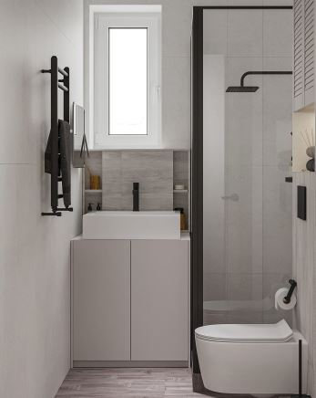
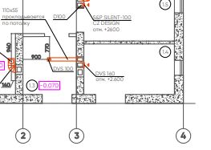

Ниже распишу каждый пункт подробнее.
Кроме этого обязательно надо пройти по всей электрике перед началом работ.
Дополнительно еще обсудим, что уже закуплено и что еще предстоит.
Напомню, выглядеть это должно примерно вот так 
Мебельщики говорят, что на деревянную столешницу под мойкой гарантии не дадут, потому как вода будет затекать на кромку.
Может быть получится выложить верх из плитки? Надо будет обдумать такой вариант. Раковина все равно крепится к стене на кронштейне.
Плитку видимо придется докупать. Давайте возьмем вот эту
Необходимо сделать выход вентиляции в котельной как показано в проекте 
Обратите внимание, канал для котельной должен быть обособлен. Находится между фановым стояком и вентиляцией помещений.
Тут вроде ничего сложного. Просто пробить в нужном месте и поставить сетку.